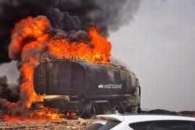
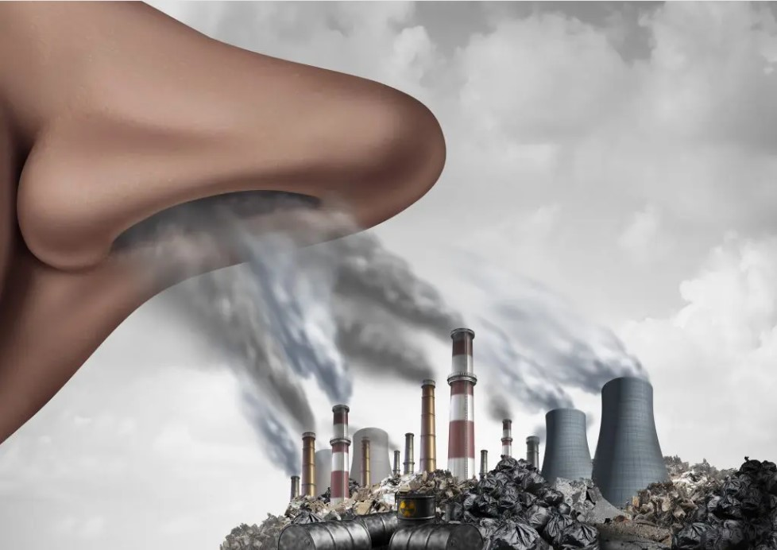

Air pollution may be defined as any atmospheric condition in which certain substances are present in such concentrations that they can produce undesirable effects on man and his environment.These substances include gases (Sox, NOx, CO, HCs, etc.) particulate matter(smoke, dust, fumes, aerosols) radioactive materials and many others.
Most of these substances are naturally present in the atmosphere in low (background) concentrations and are usually considered to be harmless . So Air pollution is a problem of obvious importance in most of the world that affects human,plant and animal health.
For example , there is good evidence that the health of 900 million urban people suffers daily because of high levels of ambient air sulfur dioxide concentrations. Air pollution is one of the most serious environmental problems in societies at all level of economic development. Air pollution can also affect the properties of materials (such as rubber), visibility, and the quality of life in general.
In the lead-up to the Industrial Revolution, human greenhouse gases from the combustionof fossil fuels average temperatures in storms and floods in temperatures. Scientists argue that climate change will affect climate change. But, climate change has been slow .So As a result of natural climate change, the Earth experienced regular cold periods in the past, when large portions of the Earth's surface were covered by glaciers. The Earth also experienced warmer periods when sea levels were much higher than they are now

Climate change and air pollution are a major environmental challenge faced by all countries of the world , Climatechange and air pollution have become a threat to health and the environment , Information from the literature indicates that human activities mainly contribute to the release of variousair pollutants through various activities such as the illegal production of petroleum products and this affects the health status of people and the environment . So The threat of climate change and air pollution on the health of people is very obvious , This poses a great danger to the economy of the state resulting from people migrating to other.So The threat of climate change and air pollution on the health of people is very obvious , This poses a great danger to the economy of the state resulting from people migrating to other places.
Both climate change and air pollution are worsened by the burning of fuel, increasing the CO2 emissions which cause global warming. Meanwhile, the generation of other pollutants, such as nitrogen oxides (NO and NO2), sulfur oxides (SO2and SO3) and particulate matter, is the main reason the air is contaminated. So The final comparison we can make between climate change and air pollution is the most hopeful: both share a common solution, the introduction of a more sustainable energy model Energy efficiency, more renewable energy, the use of electric vehicles, less resource consumption, application of measures from the Paris Agreement… will ultimately serve to reduce the polluting emissions that raise the temperature of the planet and make the atmosphere such a polluted environment.
Helwan is a city in Egypt and apart of Greater Cairo
Study Area is located in the Arab Republic of Egypt, to the south of Cairo, the capital of the country, on the east bank of the Nile, to the north of Beni Suef, to the northeast of Fayoum, to the southeast of the Sixth of October City, andto the southwest of New Cairo. Study area is one of thesuburbs south of Cairo
29°58′20.4″, 29°45′14.89″N- 31°13′58.7″, 31°24′57.7″E